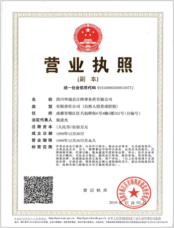

走进华强
- 公司简介
- 企业文化
- 发展规划
- 公司理念
- 服务范围
- 重要客户
- 专业团队
四川华强会计师事务所有限公司是当今四川省内最具声望、最具规模且具备国际服务能力的综合性专业事务所，四川华强始终把服务国家和社会做为立所之本，恪守诚信执业原则，致力于打造专业化、规模化、且具备国际视野和国际服务能力的品牌事务所。
四川华强发展历史可追溯到上世纪八十年代末，是国内成立较早、存续时间较长的专业服务机构。成立三十年来，始终以服务国家、服务社会为己任，致力于推动诚信、公平、可持续的市场环境和商业环境的发展，以高质量的专业水准，公正诚信的执业原则，健康和谐的发展方式，努力为客户创造商业价值，为社会创造公信价值，并不断将服务能力向国际延伸。2012年10月加入尼克夏国际会计师事务所网络，成为尼克夏国际在中国西部地区唯一的成员所，为华强的未来发展构建了新的平台。2017年在四川省注册会计师协会综合排名中位列第7名，综合评级为AAA级会计师事务所。
四川华强总部位于四川成都，在省内设有宜宾、德阳2家分公司，形成了对川西、川南、川北地区的全覆盖。
四川华强拥有审计、工程造价甲级资格、资产评估等行业的最高资质，业务范围涉及审计、管理咨询、会计服务和工程造价等众多领域，具备同时为多个大型企业集团服务的能力，从2001年起，为四川省财政厅监督局、综合处、采购处、财政部专员办，国有企业监事会、四川省注册会计师协会提供监督检查服务，现有客户遍及全国，其中大中型国有企业和民营企业300余家，服务对象涉及工业、交通、能源、信息、金融、建筑、房地产等行业。
四川华强坚持打造高水平的专业技术、专业质量和风险控制系统。凭借科学合理的内部治理结构和完善的现代化信息管理系统，实现扁平化矩阵式管理模式，在四川省行业内享有盛誉。四川华强秉持“诚信、专业、责任、创新”的精神，以高起点谋划全局、高标准开展工作、高水平推动发展、高要求砥砺精神，专业报国、服务社会、成就员工，推进制度创新，拓展多元业务，培育高端人才，强化风险管控，深化信息建设，倡导技术引领，擦亮专业品牌，为中国注册会计师行业提供专业领跑的力量。
公司定位
区域市场审计顾问专家
四川华强要在区域市场中成为智力资源提供的领先者。华强人追求“三满意”：客户满意、员工满意、股东满意。以卓越的专业技能与丰富的执业经验做事； 以言必信行必果的原则做人！华强人将秉承“自强不息，厚德载物”的精神，与时俱进的在财务顾问、资本运营、管理咨询三方面加大投入，储备人才，聘请名师，加强练兵。
营业执照展示
